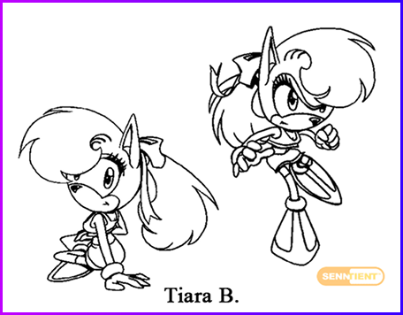
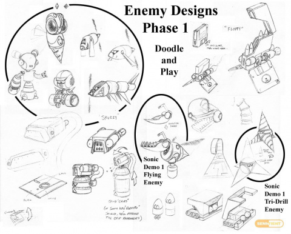
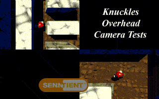

OVERVIEW
Sonic X-treme was intended to become the first fully 3D Sonic the Hedgehog game.
Developed for the Sega Saturn during the mid-1990s, the project underwent multiple redesigns, engine rewrites, and internal production conflicts before eventually being cancelled in 1996.
Despite never reaching release, the game became one of the most famous examples of video game vaporware.
Promo video of Sonic X-treme.

Line art of Tiara Boobowski, Sonic's love interest in Sonic X-treme.
STORY
The game followed Sonic as he explored a series of surreal floating worlds threatened by the villain BlackNarcissus.
Throughout the adventure, Sonic would travel across futuristic environments filled with loops, suspended pathways, and mechanical structures while attempting to stop the destruction of the planet.
Early versions of the project also included additional playable characters such as Tiara Boobowski, a character created specifically for the game.
Compared to previous Sonic titles, Sonic X-treme aimed for a more experimental and futuristic atmosphere.
GAMEPLAY
Sonic X-treme was designed as a fully 3D platform game focused on speed, momentum, and exploration.
One of its most recognizable features was the experimental fisheye camera system, which distorted the environments around the player and created a curved visual effect.
Gameplay included:
- high-speed platforming
- ring collection
- large explorable stages
- boss encounters
- vertical movement
Prototype footage showed mechanics and level structures that differed significantly from both classic 2D Sonic games and later 3D entries in the series.
Gameplay demo of Sonic X-treme.

Enemy Designs Phase 1, documentazione di sviluppo.
DEVELOPMENT
Development began during Sega's transition from 2D to 3D gaming.
Multiple teams worked on different versions of the game simultaneously, leading to technical issues and inconsistent creative direction.
The project changed engines several times throughout production, while developers struggled with the Sega Saturn hardware and increasing deadlines.
Former team members later described the development process as chaotic and physically exhausting.
CANCELLATION & LEGACY
Sonic X-treme was officially cancelled in late 1996.
According to reports from developers involved in the project, internal conflicts between Sega of America and Sega of Japan, combined with technical difficulties and severe time pressure, contributed to the cancellation.
As a result, the Sega Saturn never received an original mainline Sonic platform game.
Sonic X-treme became one of the most discussed cancelled games in video game history.
Over the years, prototype builds, concept art, development footage, and interviews with former developers continued to surface online, turning the project into a symbol of Sega's struggles during the Saturn era.
Today, the game remains one of gaming's most famous "what if" scenarios.

One of the proposed alternate playstyles that was ultimately discarded.